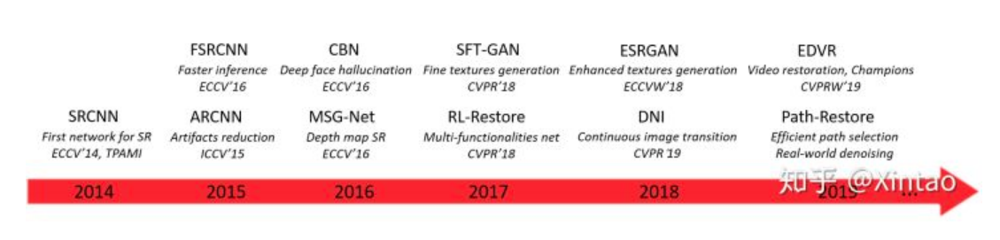
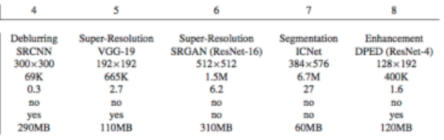

Preliminary
super resolution相關的model
和denoise (see in the dark - CAN or U-Net)
因為都是處理per pixel, 所以是類似的應用, 原理也都很像
https://github.com/evansin100/Denoise
History
VDSR是在2016

Concept
超解析度技術（Super-Resolution）是指從觀測到的"低解析度影象"重建出相應的"高解析度影象”
=> 所以user的感覺是給一張小圖(low resolution)會輸出一張大圖(high resolution),點變多了
在監控裝置、衛星影象和醫學影像等領域都有重要的應用價值。
SR可分為兩類:
從"單張"低解析度影象重建出高解析度影象, 即Single Image Super-Resolution (SISR)
SISR是一個逆問題，對於一個低解析度影象，可能存在許多不同的高解析度影象與之對應，
因此通常在求解高解析度影象時會加一個先驗資訊進行規範化約束。
在傳統的方法中，這個先驗資訊可以通過若干成對出現的低-高解析度影象的例項中學到。
而基於深度學習的SR通過神經網路直接學習解析度影象到高解析度影象的端到端的對映函式
較新的基於深度學習的SR方法，包括SRCNN，DRCN, ESPCN，VESPCN和SRGAN等
</td>
Input
這邊可以看到各種model
他們的input image的設定
e.g., SRCNN: input 300x300, VGG19 192x192, SRGAN 512x512
